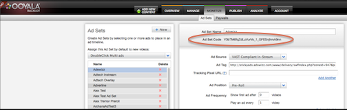

Player V3 enables you to assign ad sets dynamically with
OO.Player.create and the adSetCode parameter.
Important: Ooyala Player V3 is deprecated and is scheduled
to be
disabled on 2018-01-31. After that date, Player V3 will no longer play your video
or audio content. Customers still using Player V3 need to migrate to Player V4 (see
Migrating from Player V3 and
Player Migration FAQ).
Each ad set has a unique Ad Set Code identifier. You must first set up the Ad Set Code in
Backlot, as shown in the first steps below.
To assign the ad set with OO.Player.create and the adSetCode
parameter:
-
Associate an ad set with an asset (movie) in Backlot.
-
Once you create the association, you can get the Ad Set Code. The following figure shows an
example of this association and the Ad Set Code that you create in the MONETIZE tab.

Note: The ad set code identifier is not available by default for security reasons. Please contact
your Customer Success Manager or Technical Support to enable this feature for your
account.
-
Use the OO.Player.create function to generate a player that takes a DOM element and the
embed code of the player. In the following script example we name the DOM element playerwrapper
and add the standard parameters height and width.
-
Add the additional adSetCode key value pair to associate an ad set with a particular player
and player asset (video).
<script>
var videoPlayer = OO.Player.create('playerwrapper','embed_code',{
height:'100%',
width:'100%',
adSetCode:'yourAdSetCode'
});
<script>